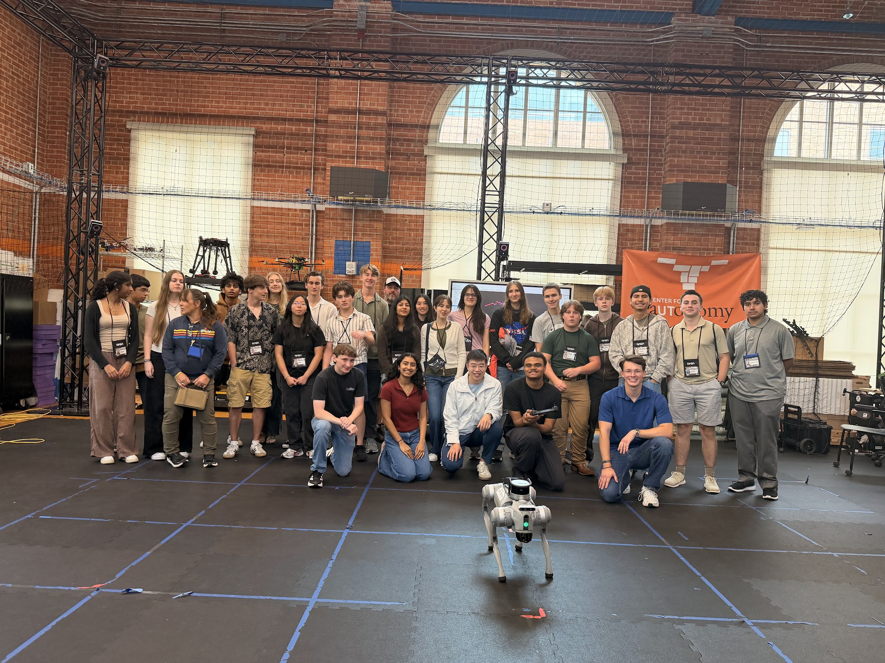
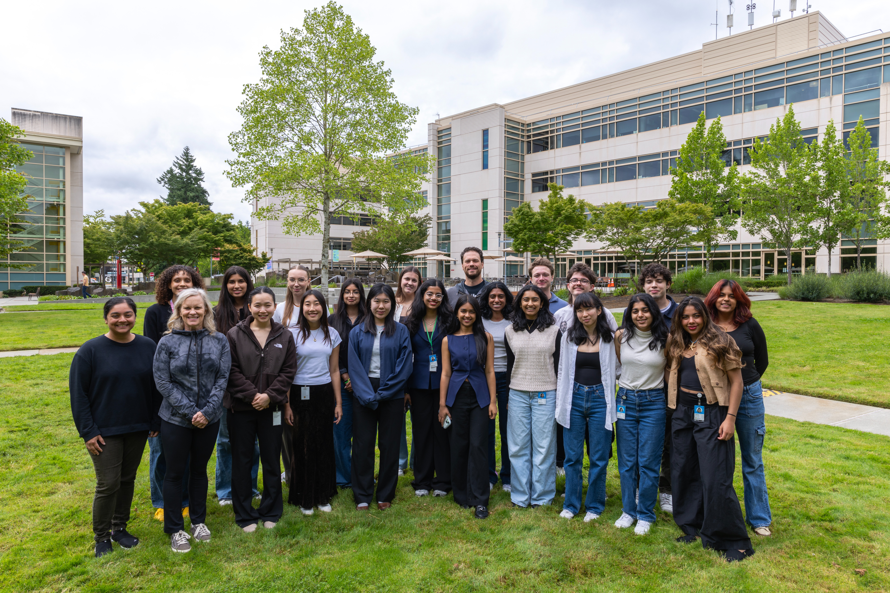
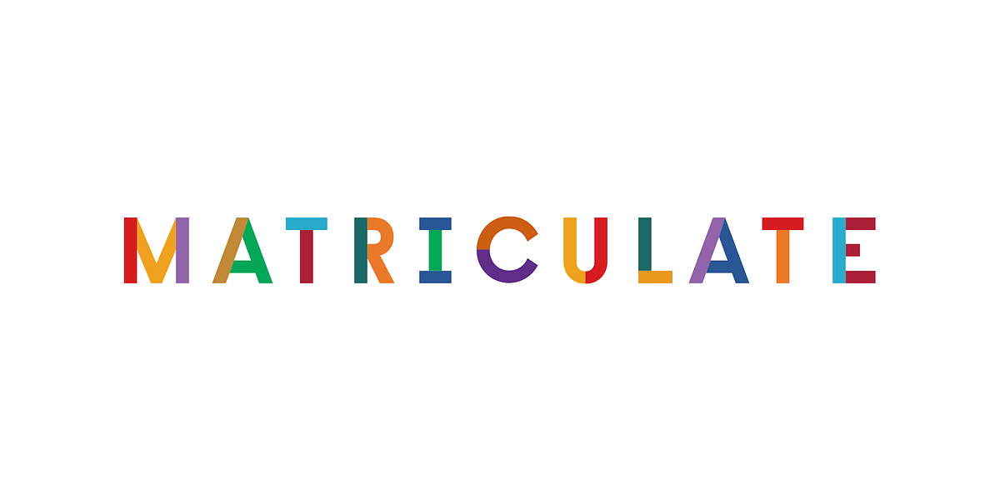
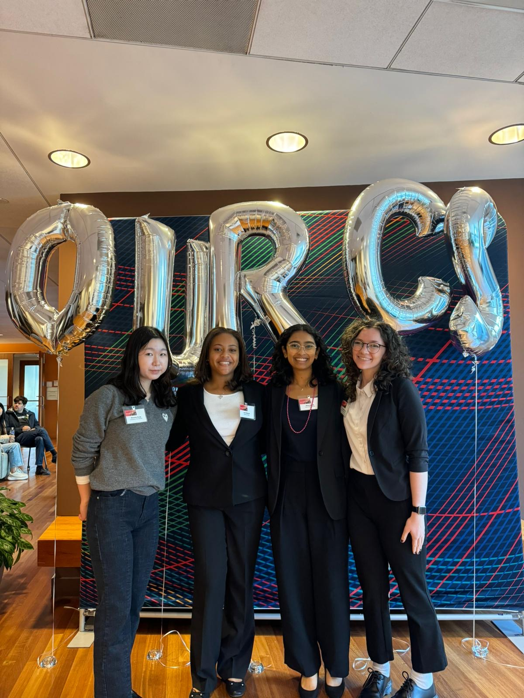

Raisa Karnik
I'm an undergraduate majoring Computer Engineering at Texas A&M University, working with Dr. Robin Murphy and Dr. Dileep Kalathil.
My research interests are focused on computer vision and autonomous robotics to ensure systems can perceive and make decisions in unpredictable, real-world environments.
Outside of research, I like bouldering and hiking!
Research
Computer Vision for Disaster Response
Uncertainty-Aware Building Damage Assessment
Modeled epistemic uncertainty and aleatoric uncertainty to cut expected calibration error 90% against an uncalibrated baseline.
Robot Learning & Manipulation
Evaluating Vision-Language-Action Architectures for Generalization
Tested smolVLA and π0 to study performance with different language instruction phrasing and environmental conditions.
Latency and Accuracy Tradeoffs in VLA Models
Deployed smolVLA and π0 to study latency, accuracy, and size-performance tradeoffs.
Highlights

CISE REU at UT Austin
One of 5 students selected, deployed reinforcement learning finetuning of diffusion policies for robot control.

Microsoft Research Internship
One of top 20 undergraduate students selected, worked on vision-language-action models for edge computing applications.

Matriculate Advising Fellow
Mentored high school seniors from low-income backgrounds in the college application process.

OurCS Workshop at CMU
Attended talks and panel discussions, presented poster on ML analysis of CPAP mask data.